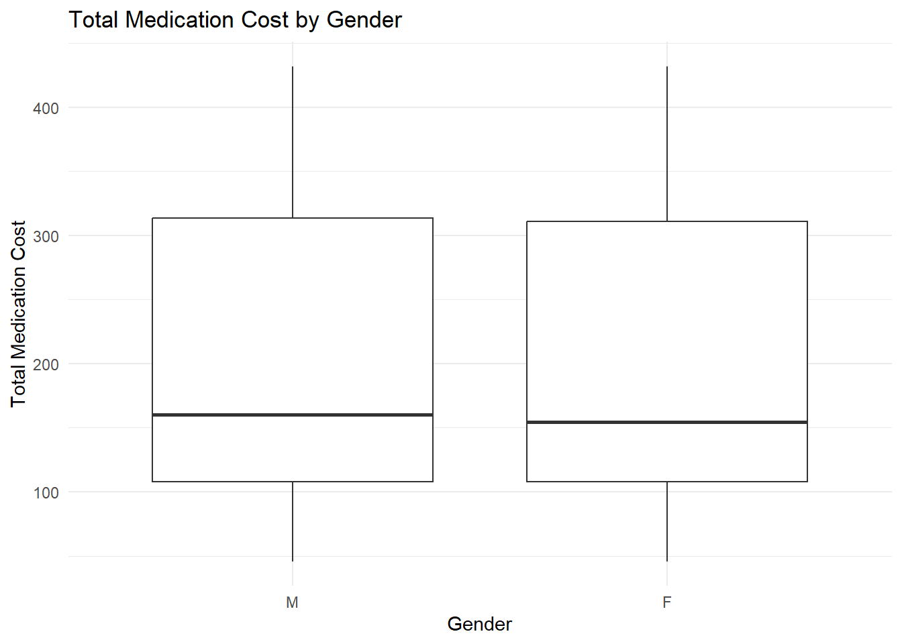
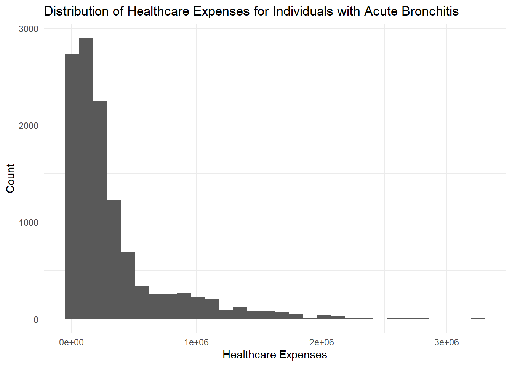
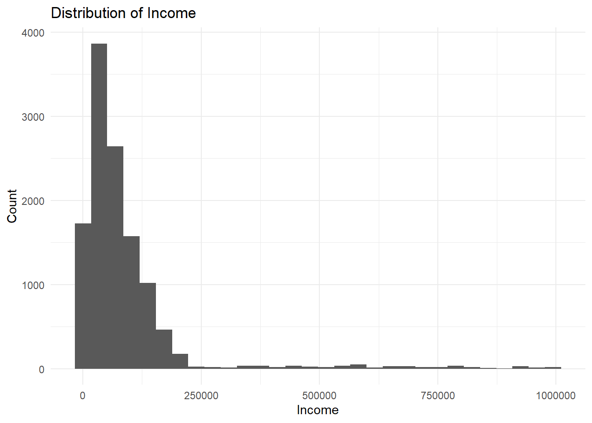
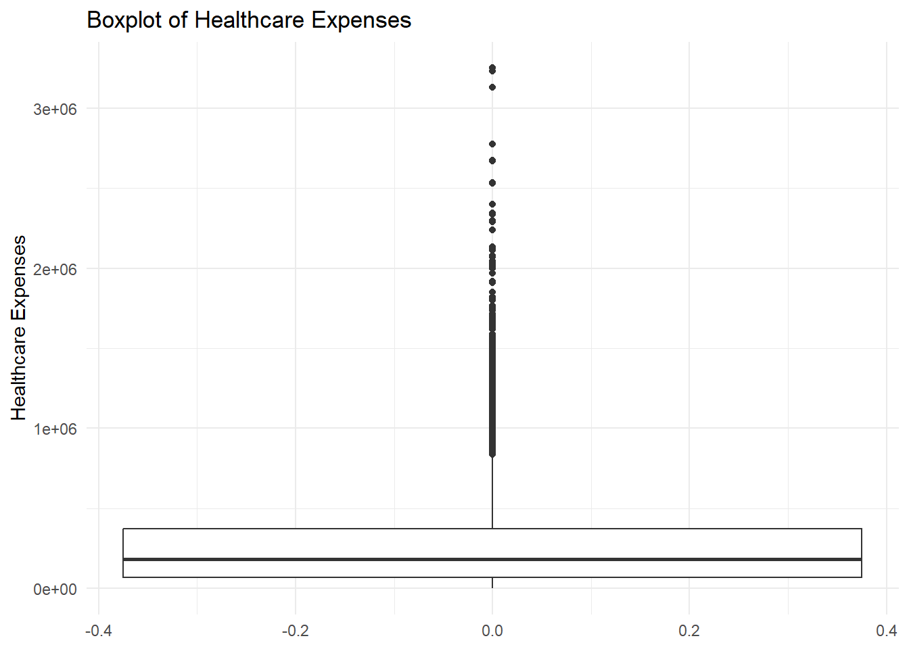
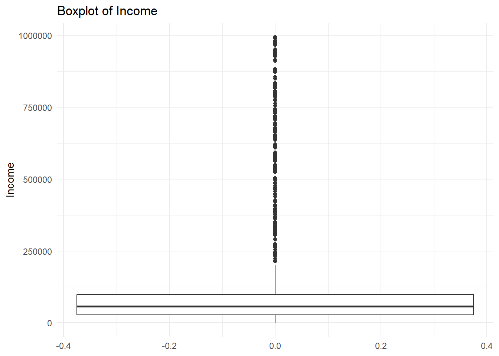

| Sum of total | Average total cost | Average base cost |
|---|---|---|
| 2466305 | 205.42 | 205.42 |
Acute Bronchitis Cost Analysis
Introduction
Acute bronchitis is one of the most common respiratory infections, typically caused by viral pathogens, though bacterial etiologies may occur less frequently. It is characterized by inflammation of the bronchial tubes and commonly presents with cough, sputum production, and mild systemic symptoms. Despite its generally self-limiting course, acute bronchitis contributes substantially to the burden on healthcare systems due to its high incidence and frequent healthcare utilization (1-3). The associated healthcare expenditure represents an important aspect that needs closer attention. In particular, understanding direct medical costs can provide a clearer picture of the economic impact of the condition and help identify inefficiencies in resource use and treatment practices (4,5). Thus, this study examines the healthcare cost burden of acute bronchitis with a specific focus on medication expenditures and overall baseline healthcare costs among diagnosed individuals. It evaluates the average medication cost per patient and investigates whether these costs differ by gender, thereby highlighting potential disparities in treatment patterns. Additionally, the analysis explores the distribution of total healthcare expenses across income groups, offering insight into socioeconomic inequalities in healthcare utilization and financial burden.
Load packages
Data preparation
A file for the data was created to store all the data and to be sure that no sensitive data were tracked by git.
The data was collected from multiple files. Data linking was peformed to be able to construct the analysis by combining 3 data sets in total. We started to create a new data frame that only had the columns of interest. The columns most interesting for our analysis was for instance gender, total cost, healthcare expences and coverage, payer coverage, base cost and income. After the new data frame was created it was also placed under gitignore to not be tracked by git. After the neccessary columns was created we filtered only on the condition code present in both medication and condition file to be able to only get the results from a certain condition. We did also join patients “id” from patients file and “patients” from condition file.The condition that we filtered on was Acute bronchitis. We did also peform some data cleaning including dropping missing values and making choore the variables was in the correct format.
The main considerations for the data linking were that we must know the condition start date and and date for the patients, the medication period for that condition must lie within start date and end date for the actual condition period. Without it medication could have been given before or after diagnosis. We did also filter on medical code for the condition and for the reason code for the prescription of the medicine to make choore that the medicine were linked to the actual condition. The two medicines linked to the condition were: 1. Acetaminophen 325 MG Oral Tablet
2. “Acetaminophen 21.7 MG/ML / Dextromethorphan Hydrobromide 1 MG/ML / doxylamine succinate 0.417 MG/ML Oral Solution”
These are the medications that will be shown as the Total medication cost.
Average medication cost and base cost
The fisrt question we want to look at is the average medication cost for all individuals that has the condition. We have a total 12 006 individuals that did had the confirmed condition. What is the average medication cost for all individuals with the diagnosis, and what is the total medication cost?
The total and the average cost for the medications are shown below
Total medication cost by gender
How much does the total medication cost differ between genders? We did a simple visualization and a table summary of some summary statistics. The average cost for male and females are quiet similar but the median cost differ more. A two-samle t-test were peformed to look at the differences in total cost between the genders. The test generated a p-value of p=0.189 so no statistically significant result thattotal medical cost differ by gender were found. Income was devided into 5 groups, which were people with lowst income to the highest, the levels were: Lowest, Low-middle, Middle, High-Middle and Highest. And each person assigned into one of the five categories. A regression model with the Gamma distribution were peformed to look at the the effect that gender and the income has on total medication cost. No significant results were found. The Gamma regression were choosen since the data are right-skewed and heteroscedacity problems handeled. Gamma regression were considered to be appropiate for health economics data.

| Gender | Average medical cost | Median medical cost | Number of patients |
|---|---|---|---|
| F | 500.72 | 398.45 | 2449 |
| M | 515.18 | 422.53 | 2407 |
Call:
glm(formula = total_medical_cost ~ gender + income_quintile,
family = Gamma(link = "log"), data = filter(analysis_data,
total_medical_cost > 0))
Coefficients:
Estimate Std. Error t value Pr(>|t|)
(Intercept) 6.21754 0.02642 235.326 <2e-16 ***
genderM 0.02856 0.02167 1.318 0.188
income_quintileLow-Middle 0.03871 0.03429 1.129 0.259
income_quintileMiddle 0.01208 0.03434 0.352 0.725
income_quintileHigh-Middle -0.01335 0.03427 -0.390 0.697
income_quintileHighest -0.04675 0.03425 -1.365 0.172
---
Signif. codes: 0 '***' 0.001 '**' 0.01 '*' 0.05 '.' 0.1 ' ' 1
(Dispersion parameter for Gamma family taken to be 0.5693447)
Null deviance: 3093.0 on 4855 degrees of freedom
Residual deviance: 3088.1 on 4850 degrees of freedom
AIC: 69520
Number of Fisher Scoring iterations: 5| Name | Estimate | Std. Error | z value | p-value | |
|---|---|---|---|---|---|
| (Intercept) | (Intercept) | 6.218 | 0.026 | 235.326 | 0.0000 |
| genderM | genderM | 0.029 | 0.022 | 1.318 | 0.1876 |
| income_quintileLow-Middle | income_quintileLow-Middle | 0.039 | 0.034 | 1.129 | 0.2590 |
| income_quintileMiddle | income_quintileMiddle | 0.012 | 0.034 | 0.352 | 0.7250 |
| income_quintileHigh-Middle | income_quintileHigh-Middle | -0.013 | 0.034 | -0.390 | 0.6969 |
| income_quintileHighest | income_quintileHighest | -0.047 | 0.034 | -1.365 | 0.1723 |
Healthcare expenses across income
The next question that we want to adress is what is the distribution of healthcare expenses across total income? This is relevant since the income is often related to healthcare spendings and how much people can spend on medication. People that has different incomes may have different access to care and may delay some expensive cost. Sine Acute bronchitis is a severe condition if the symptom releving medications are not taken it can lead to other consequences. Below we showing some ditribution of the variables and how we could confirm that the data are right-skewed.

Distribution of healthcare expenses

Distribution of income

Boxplots


Interpretation
We can observe that both income and healthcare expenses are strongly right skewed. This suggests the presence of high value observations that affect the overall distribution. So most people may have low or moderate values but since some people have very high values or outliers this will create the long-tailed distribution. Income may influence healthcare expenses because differences in income can affect access to care and medication choices. Healthcare expenses may also contribute directly to the total cost of the disease. Overall, the results suggest that income and healthcare expenses may influence the total medication cost for acute bronchitis.
Summary
This anlysis did aim to examine how the total medical cost for the condition of Acute Bronchits did differ for genders, and also some other subquestions about income and average cost. Total medication cost was summarized by gender and a t-test were peformed. We could not see any statistical significant differences between the genders. Income was also devided into 5 groups this allowed healthcare expenses to be compared across people with different incomes. Regression model for the effect of gender and income were fitted but no results that show any evidence of effect. As a conclussion we could not find any statistically significant differences between the genders or income for the medication cost of Acute Bronchitis.
Refrences
1.Wenzel RP. Acute Bronchitis and Tracheitis. Goldman’s Cecil Medicine. 2012:586–7. doi: 10.1016/B978-1-4377-1604-7.00096-8. Epub 2012 May 8. PMCID: PMC7151881.
2.Singh A, Avula A, Zahn E. Acute Bronchitis. [Updated 2024 Mar 9]. In: StatPearls [Internet]. Treasure Island (FL): StatPearls Publishing; 2026 Jan-. Available from: https://www.ncbi.nlm.nih.gov/books/NBK448067/
3.World Health Organization (7 January 2025). Disease Outbreak News; Trends of acute respiratory infection, including human metapneumovirus, in the Northern Hemisphere. Available at: https://www.who.int/emergencies/disease-outbreak-news/item/2025-DON550
4.Pritchard D, Petrilla A, Hallinan S, Taylor DH Jr, Schabert VF, Dubois RW. What Contributes Most to High Health Care Costs? Health Care Spending in High Resource Patients. J Manag Care Spec Pharm. 2016 Feb;22(2):102-9. doi: 10.18553/jmcp.2016.22.2.102. PMID: 27015249; PMCID: PMC10397786.
5.Scott RD 2nd, Culler SD, Rask KJ. Understanding the Economic Impact of Health Care-Associated Infections: A Cost Perspective Analysis. J Infus Nurs. 2019 Mar/Apr;42(2):61-69. doi: 10.1097/NAN.0000000000000313. PMID: 30817421; PMCID: PMC12239992.